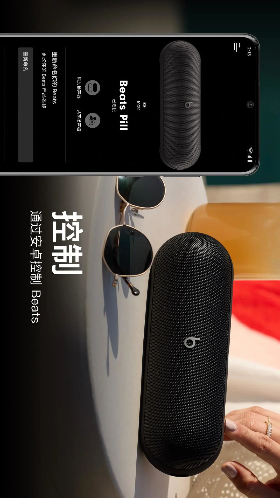

Beats 安卓应用实测：在运动耳机和 Pill 音箱之间，它找了一个很窄但很准的位置
用过四款耳机配套 App 之后，聊聊 Beats 这款应用在同类里的差异化——贴合度测试、音箱组合玩法、隐私边界，以及它不值得为了耳机单独装的那些地方。
安卓生态里做耳机配套应用的厂商不少，大厂方案有自己的一套路子，小厂则各有取舍。Beats 的这款 Android 客户端我用了大半年——先去官网查过它能管哪些机型：Fit Pro、Powerbeats Pro 2，中间还接过一只 Pill——它在同类里的位置其实挺特别：不是功能最全的，也不是界面最花哨的，但有几处做得异常较真，较真到让人觉得"这不像是大厂常规流水线产品"。
同类格局里的定位
先交个底：我手上对比过的耳机 App，涵盖了运动型、降噪型、真无线主流品类。多数厂商的思路是"一个 App 管全家"——自家所有耳机型号往里塞，界面框架统一，功能按机型裁剪。Beats 也不例外，对应应用直接从下载拿就行，但它的裁剪方式很有意思：不是简单把高级功能藏起来等你买旗舰，而是把一些别家不太在意的细节做深了，同时在降噪调节这类常见功能上保持克制。
这意味着，如果你手里只有一副 Beats 耳机，这个 App 值得装；但如果你在多个品牌之间切换，它未必是那个你每天都会打开的东西。
三个别家没做到位的差异化点
贴合度测试：把玄学变成可验证结论
入耳式耳机的音质和降噪，密封度占了一半权重。但绝大多数厂商的做法是——给你三副不同尺寸的耳塞套，然后让你自己"感觉一下"戴没戴对。
Beats 不一样，后来去Beats文档翻了一下才确认——它在应用里内置了一套贴合度测试流程：打开自动人耳检测、安静室内、关闭所有播放源，然后按屏幕指示操作。测试结束直接给结论——合格或者不合格。不合格怎么办？换大一号的耳塞套再测。
这个功能的直接好处是把"音质闷是不是因为没戴对"这个常见疑问变成了可验证的问题。换了耳塞套再跑一次测试，如果还是不通过，那才去考虑音质本身的问题。更有意思的是，这个测试对 Powerbeats Pro 2 还有第二层意义——它的心率监测传感器依赖稳定贴合，密封不好，运动时读到的心率数据也会飘。
Pill 音箱的组合玩法：独立于耳机体系的一套逻辑
Beats 应用管理清单里有一个独特的类目——Pill 音箱。和耳机面板共享框架但多出几个只有音箱才有的条目：添加扬声器（组扩音或立体声群组）、共享扬声器（朋友的手机轮流放歌不用断开重连）、提示声音量独立控制。
这套组合玩法在耳机品类里找不到对应物。两只 Pill 可以组同放大同声的扩音模式，也可以左右分道组建体声——切换全部在应用面板里完成，不用跑到音箱本体上按按钮。共享扬声器那个功能更巧：朋友来了想换歌，你不用把手机递过去，直接在应用里发起共享，对方手机就能临时接管播放，完了自动断开回到你自己的手机。

音箱本体的实体操作倒是保持克制：短按电源键看电量指示灯，绿灯足红灯低，就这一个交互。应用和实体键分工明确——前者管组合和设置，后者管开关机和快速状态确认，不抢戏。
隐私边界写得清清白白
大多数耳机 App 的隐私条款要么藏得很深要么写得含糊，Beats 应用把隐私控制直接摆在了设置顶层。它的诊断数据开关有三个明确的边界：发送数据帮改进产品、数据做了去身份化处理、但可能包含位置信息。
三句话合起来读就是——你关掉这个开关，连接、降噪、固件更新、定位找回全部正常工作，只是不再帮厂商收集改进数据。位置权限和分析开关是两套独立的系统侧权限，想控制得分开关：不用耳机找回功能的话，位置权限可以只给"仅使用期间"甚至完全不给。
这种清晰的边界描述在同类里不常见。多数厂商要么把隐私条款往浏览器里一塞完事，要么只说"我们会保护你的隐私"这种正确但没信息量的话。
它为这些优势付出了什么
差异化的另一面是取舍，Beats 的取舍集中在"不做什么"上。
首先是机型覆盖。贴合度测试只支持 Fit Pro、Powerbeats Fit、Powerbeats Pro 2 三款入耳式机型，其他入耳式耳机没有这个入口，密封性只能靠听感自判。不是它做不了，是它选择只在特定机型上投入这个功能。
其次是降噪调节的克制。应用里有降噪开关，但不像一些竞品那样给你三档或滑块让你细调降噪深度。对运动场景来说这不是大问题——跑步时不需要精确调到 40% 降噪——但如果你在通勤或办公室场景用它，可能会怀念竞品那种细致的降噪档位。
还有一个小细节：提示声音量的独立滑块虽然方便，但它只管耳机侧的提示声。深夜通勤想把连接成功的"叮"声调到最小没问题，但要是换了 Pill 音箱，音箱侧的提示声入口在另一个面板，得单独找。
选购结论
什么样的人会从 Beats 应用里受益？
- 正在用或准备买 Powerbeats Pro 2：贴合度测试和心率监测的配合是它独有的，运动场景下这个组合的价值被放大了。
- 手里有 Pill 音箱：组合扩音和共享扬声器这两个玩法，在同类蓝牙音箱的配套 App 里确实少见。
- 在意隐私控制：应用的权限边界写得明确，关掉分析开关后功能不受影响，这个透明度值得肯定。
反过来，如果你不碰 Pill、不在运动场景、只想要一个能精细调节降噪的耳机 App——Beats 的这款应用可能不是你的最佳选择，很多竞品在通用功能上做得更全。
最后说句实在话：我把 Beats 应用装了快一年，真正高频打开的场景其实只有两个——换耳塞套后跑一次贴合度测试，以及朋友来家里组 Pill 扩音。平时配对连接、切换设备这些事，系统侧就搞定了。但它在这两个高频场景里的较真程度，是我愿意一直留着它的原因。这套资料的开源备份在 GitHub、Gitee 和 GitCode 三个仓库都同步了一份，按需取用就行。